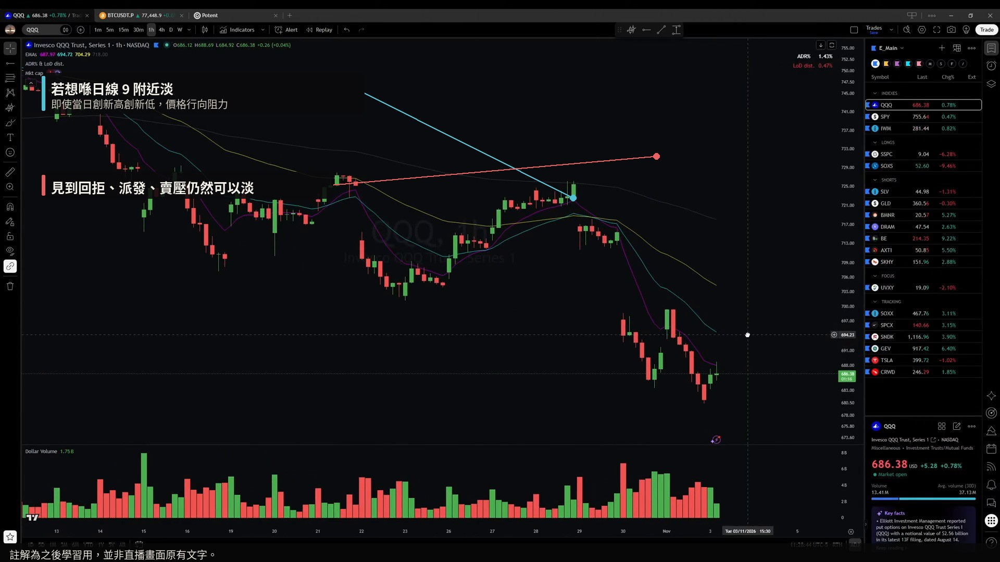
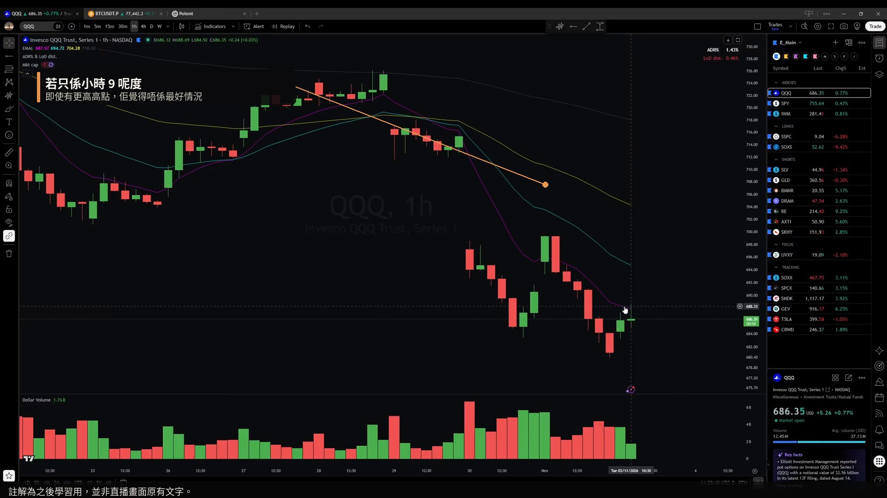

概要
有更高高點，都要睇價格去到邊
有人問：如果日内圖正在做更高高點、更高低點，會唔會避免再入淡。佢話唔一定，要睇價格已經去到邊。即使 Qs 今日做緊更高高點同更高低點，若只係小時 9 呢度，就唔係最好情況；但若想喺日線 9 EMA 附近淡，即使有更高高點同更高低點，價格已經行向阻力，當出現回拒、派發、賣壓，佢仍然會淡，反過來亦可以做多。畫面先係 QQQ 日線，再切 1 小時。
圖一 · 主圖
QQQ 日線：行向阻力，見到回拒仍然可以淡
直播 2:06:54

原話
Will you avoid re-enter shorts if intraday chart is building higher highs and higher lows? Not really. So it depends on how, like where the price has moved to. Even like if the Qs is making higher highs and higher lows today, like let's say, because this is like the hourly 9, so it's not really the best scenario, best case. But if, like take this, like the daily chart, like if I want to light the shorts at this like daily 9 EMA, like even though the Qs is like making higher highs and higher lows, but the price is moving towards the resistance, like so when it shows some type of rejection, distribution, selling, then I will still short it, or like on the other hand, like to go long.
如果日内圖正在做更高高點同更高低點，你會唔會避免再入淡？唔一定。要睇價格已經去到邊。即使 Qs 今日做緊更高高點同更高低點，譬如呢度係小時 9，咁就唔係最好情況。但如果睇日線，若我想喺呢個日線 9 EMA 附近淡，即使 Qs 做緊更高高點同更高低點，價格卻行向阻力，當佢表現出回拒、派發、賣壓，我仍然會淡；反過來亦可以做多。
點樣讀
日線把「價格行向阻力」放喺具體位置上。佢沒有說創新高就不能淡，條件係位置已經到阻力，並且見到回拒、派發或賣壓。
“light the shorts” 保留原詞，本頁唔解釋成特定倉位大細。圖例冇印 9，只標口中嘅日線 9 就喺呢附近。
圖二
QQQ 1 小時：只係小時 9 就唔係最好情況
直播 2:07:20

原話
…because this is like the hourly 9, so it's not really the best scenario, best case.
……因為呢度好似係小時 9，所以唔係最好情況。
點樣讀
1 小時圖用來對照：同樣係 9 附近，但周期較低，佢覺得唔係最好情況。重點係周期同位置要一齊睇，而唔係見到 HH／HL 就一律不做。
附註
注意事項
- 圖例多數只有顏色同數值，冇印均線周期。本頁唔會把某條彩線寫死成 9 EMA。
- 畫面睇唔到成交價、倉位大細或者損益，所以唔寫死呢啲數字。